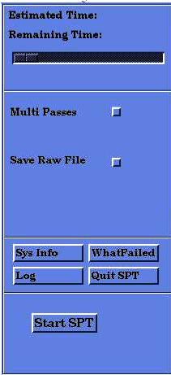
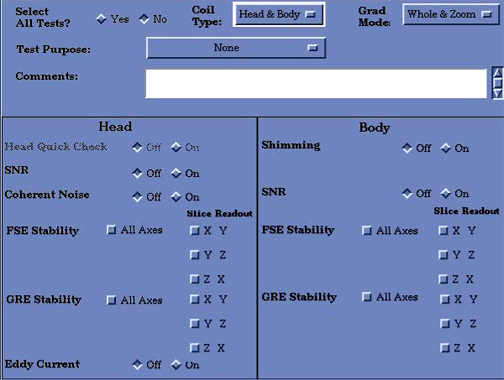
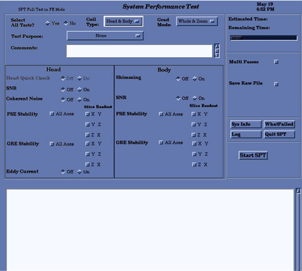
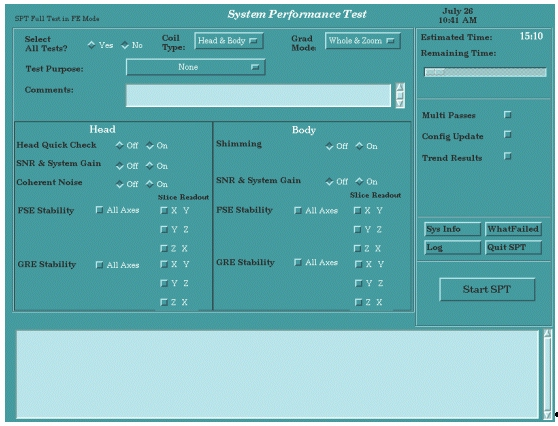
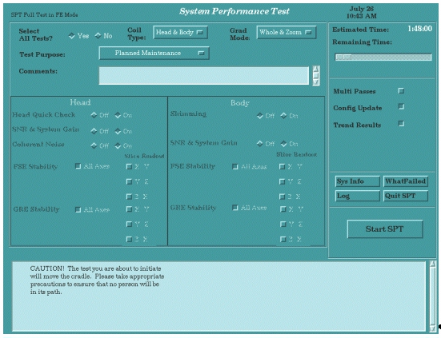
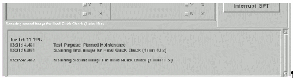

Proprietary to General Electric Company
Direction 5440000, Rev# 5
Signa HDxt Service Methods
Module Version 1.0, Version Date 5/15/07
Proprietary to General Electric Company |
All pulse sequences (PSDs) used by SPT for data collection use interfaces to product system config files to ensure compatibility with all field strengths, slew rates, and product options. Only head and body coils are used for data collection by SPT, so options such as phased array and other surface coils have no impact on test operation.
The following illustrations show the various SPT menus:
Illustration 1: Starting SPT

To run the Head Quick Check, click on the [Head Quick Check] button.
Illustration 2: Quick Check Test Selection

To run the Full Test, change the Select All Tests? selection to [Yes].
Illustration 3: Full Test Selection

Illustration 4 shows FE Test selection, single test.
Click on any combination of tests to run. (For TwinSpeed, select the GradModes to be used.) Click the [Start SPT] button to begin.
Illustration 4: Field Engineer Test Selection - Single Test Example

Illustration 5displays FE Test Selection, All Tests.
All tests can be run by selecting [All Tests] and clicking the [Start SPT] button to begin.
Illustration 5: Field Engineer Test Selection - All Tests Example

While SPT is running, a status window is displayed for the user. Illustration 6 shows an example status window for the "Head Quick Check" case. For other cases, messages applicable to selected tests are shown, including, for the TwinSpeed, the GradMode currently being used.
The lower portion of the SPT window contains a scrollable status section to keep the user informed of the test status throughout the test.
Illustration 6: SPT Status Message - Head Quick Check
